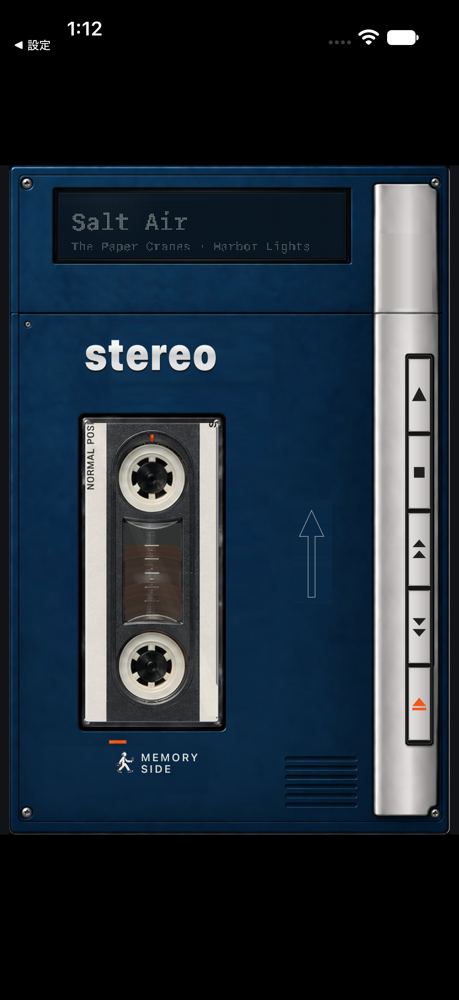
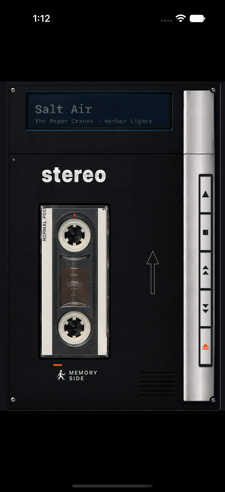
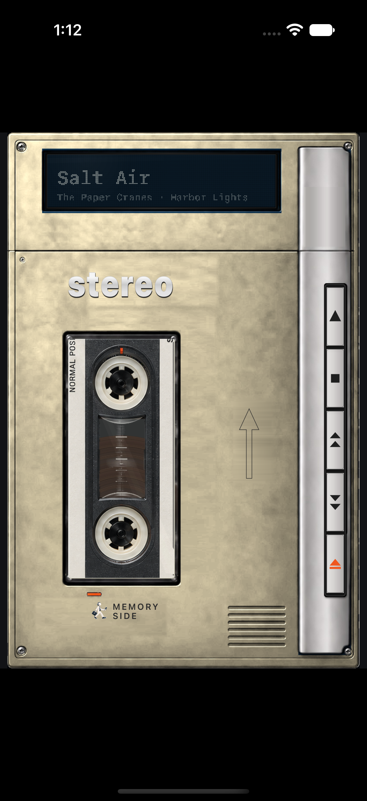
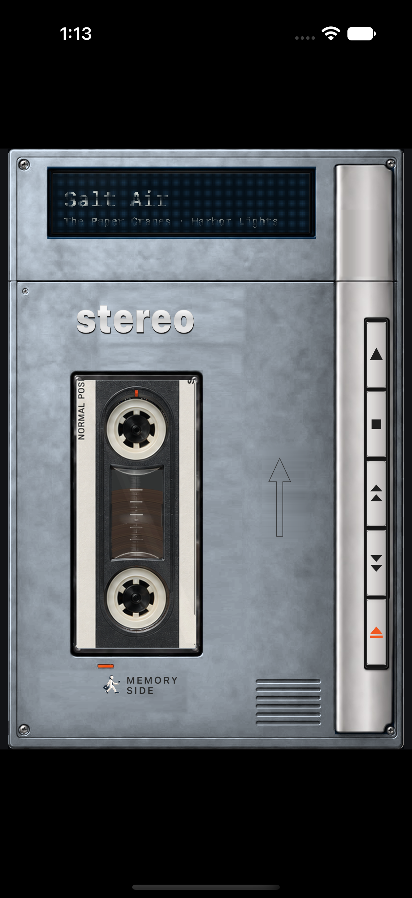
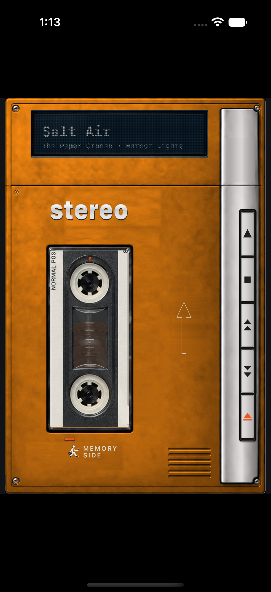
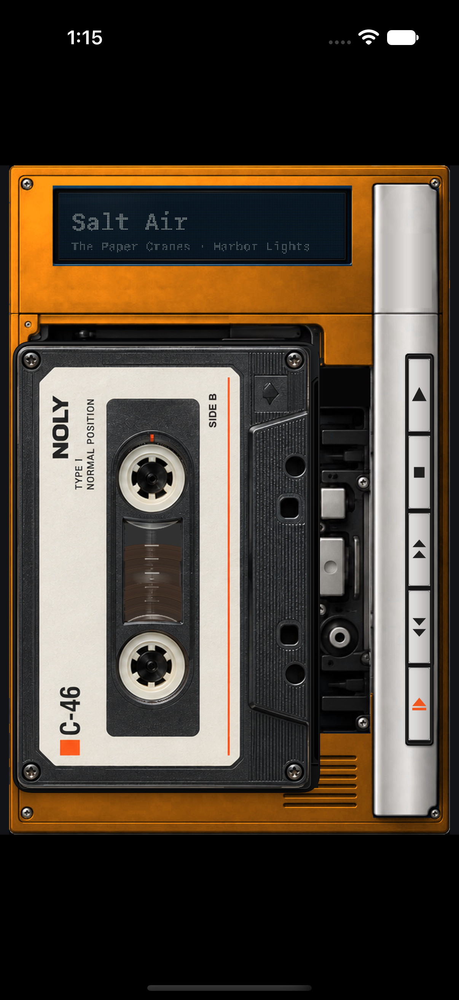
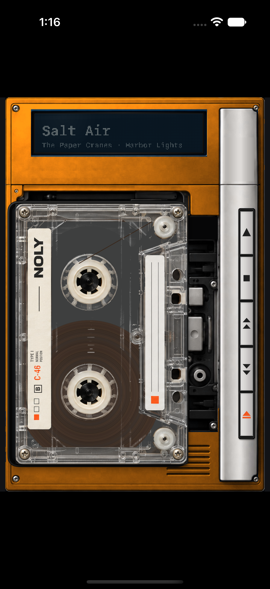
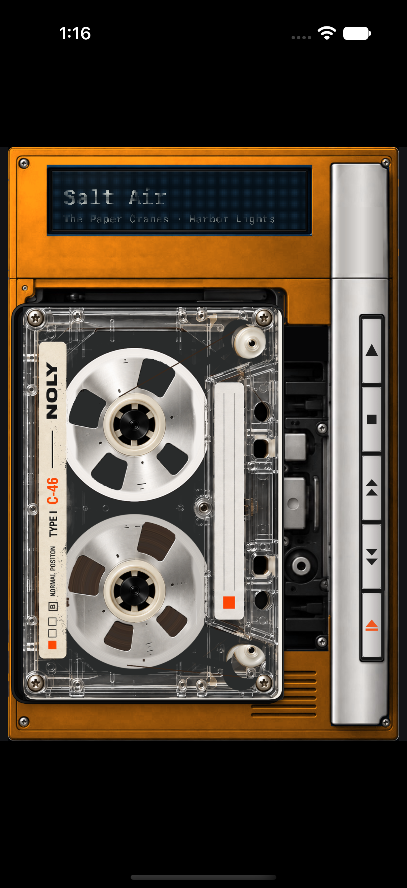
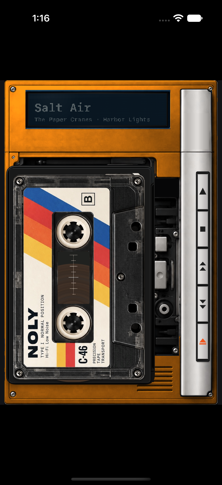

CLOSED PLAYER
カセット窓をタップ
ふたが閉じているときは、カセットが見える窓をタップします。

GETTING STARTED
初回は「メディアと Apple Music」へのアクセスを許可してください。
iPhoneではカセット窓または上部ドットパネルをタップします。iPad横向きとiPhone Duoの展開時は Library が表示されます。
開き方を画像で見る ↓ALBUMS、ARTISTS、PLAYLISTS、SONGS から探します。

アルバムやプレイリストの SET を押し、再生キーを押します。

OPEN THE LIBRARY
iPhoneでは、プレーヤーの状態に合わせて2つの場所から開けます。
ふたが閉じているときは、カセットが見える窓をタップします。
EJECTでふたを開いたら、曲名などが表示される上部のパネルをタップします。

枠は操作する場所を示した案内用の注釈です。画面はSimulator、楽曲はサンプルです。
LIBRARY
自分のライブラリのアルバム、アーティスト、プレイリスト、曲を見られます。SONGS やアーティストの ALL SONGS などの曲一覧で曲を選ぶと、選んだ曲から後の曲を一覧順に最大120分収めた編集テープを作り、その曲から再生します。
自分のライブラリの中からアルバム、アーティスト、プレイリスト、曲を検索します。

Apple Music のカタログ全体から探します。カタログの再生には対応する Apple Music のサブスクリプションが必要です。地域や配信状況により再生できない項目もあります。

CONTROLS
SET は選んだアルバムやプレイリストをカセットとしてセットします。準備ができるまでお待ちください。
再生キーは再生・一時停止、停止キーは停止します。早送り・巻き戻しキーは短く押すと曲を移動し、長押しすると早送り・巻き戻しができます。
DEVICE GUIDE
画面はSimulatorで撮影し、サンプルの音楽を表示しています。
縦向きのプレーヤーです。EJECTでふたを開閉し、カセット窓や上部ドットパネルからLibraryを開きます。
縦向きではClosedプレーヤー、横向きではLibraryとプレーヤーを並べて表示します。

開閉や姿勢に応じて画面が切り替わります。通常のiPhoneとは異なり、端末の姿勢に合わせた表示を使えます。


MAKE IT YOURS
Libraryの歯車をタップして端末の設定を開き、MEMORY SIDEの設定で変更できます。変更はアプリに戻ると反映されます。
PLAYER COLORS
「本体カラー」でデフォルト、ブラック、アイボリー、シルバー、オレンジから選べます。





Simulatorのプレーヤー画面。表示環境によって色の見え方は異なります。
CASSETTE DESIGNS
38種類からランダムに選ぶか、「カセットをランダムに表示」をオフにして手動で選べます。以下はデザインの一部です。




Simulatorのテスト用表示から撮影したデザイン例です。
「背景」で「白」「黒」「システム」「本体色に合わせる」を選べます。iPhone Duoでは背景設定は適用されず、専用の表示を使います。
背景とは別の「Sound Effects」で操作音をON／OFFできます。音量は端末の「着信音と通知」と消音モードにも影響されます。
HELP
アクセス許可、通信状態、Apple Music での再生可否を確認してください。カタログの再生には対応するサブスクリプションが必要です。
SEARCH LIBRARY は自分のライブラリを検索します。Apple Music 全体から探すには DISCOVER を使ってください。
アプリの Sound Effects 設定と、端末の「着信音と通知」の音量、消音モードを確認してください。
アプリのバージョン、端末、OS、発生した操作を添えてお知らせください。GitHub Issues は公開されるため、個人情報や機密情報は投稿しないでください。